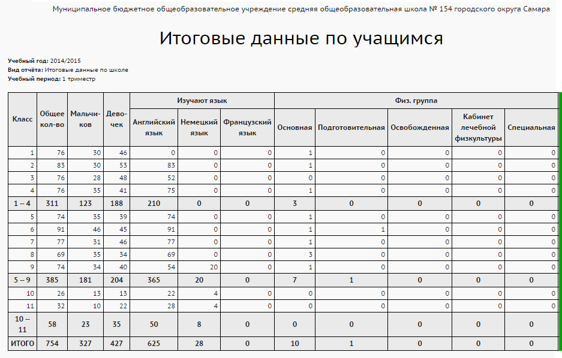
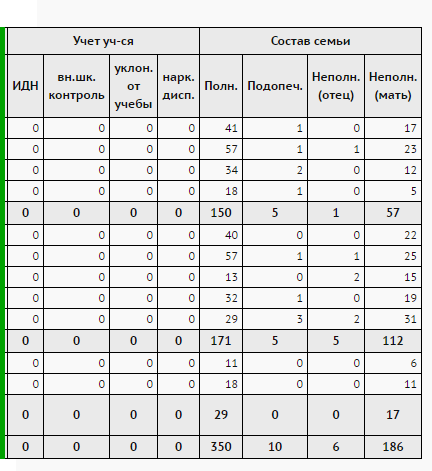

Этот административный отчет подсчитывает количество учащихся по классам:
| · | общее количество, а также количество мальчиков и девочек;
|
| · | количество изучающих тот или иной иностранный язык;
|
| · | по составу семьи (полная семья, опекаемый, воспитывает мать, воспитывает отец);
|
| · | по физ.группе (основная, подготовительная, освобожденная и др.);
|
| · | по учету учащихся (ИДН, внутришкольный учет и др.).
|
В данном отчете используются значения справочников Физ.группа, Девиантное поведение, Состав семьи.
Пример отчета:

 |
|
|